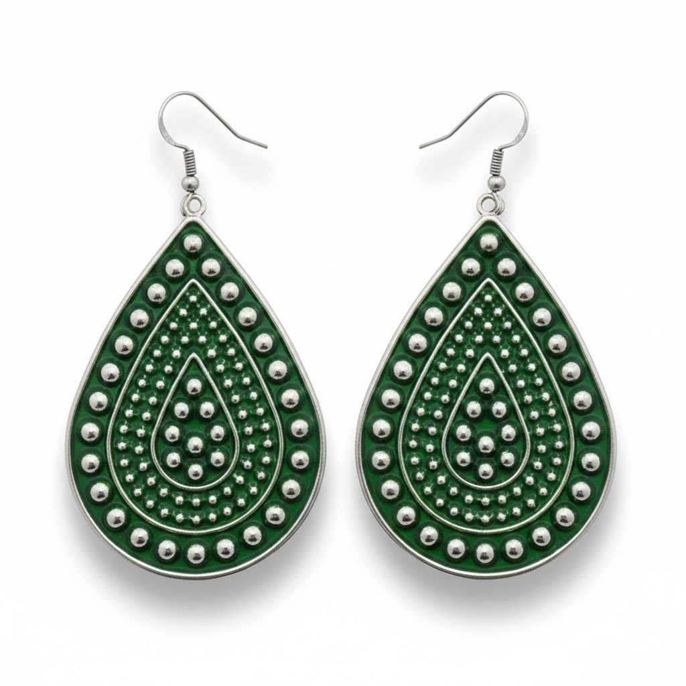

jldv1508.com
Bisutería
Conchas
Catálogo privado de piezas seleccionadas
jldv1508.com
Ver bisutería
Ver conchas
Colecciones
Consulta por imagen, tipo, material y color.

Bisutería
Pulseras, pendientes, anillos, collares y conjuntos.
Conchas
Piezas naturales organizadas con el mismo filtro inteligente.